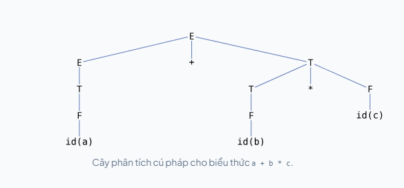
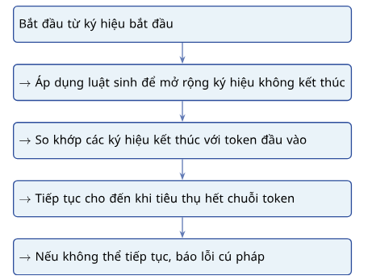
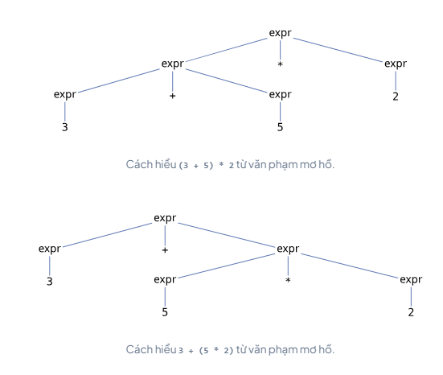

Giới thiệu
Vị trí của phân tích cú pháp
Trong pipeline biên dịch, phân tích cú pháp là pha thứ hai, đứng sau phân tích từ vựng và trước các bước như sinh cây cú pháp trừu tượng, phân tích ngữ nghĩa, sinh mã trung gian và sinh mã đích. Có thể tóm tắt vị trí của phân tích cú pháp như sau:
| Pha xử lý | Đầu vào | Đầu ra |
|---|---|---|
| Phân tích từ vựng | Chuỗi ký tự | Chuỗi token |
| Phân tích cú pháp | Chuỗi token | Cây phân tích cú pháp |
| Sinh cây cú pháp trừu tượng | Cây phân tích cú pháp | Cây cú pháp trừu tượng |
| Phân tích ngữ nghĩa | Cây cú pháp trừu tượng | Cây đã kiểm tra và bổ sung thông tin |
| Sinh mã trung gian | Cây đã xử lý | Mã trung gian |
| Sinh mã đích | Mã trung gian | Mã đích |
Ví dụ, với mã nguồn a + b * c, pha phân tích từ vựng tạo ra chuỗi token:
ID PLUS ID TIMES IDPha phân tích cú pháp không còn quan tâm từng ký tự như a, +, b, *, c. Thay vào đó, nó kiểm tra xem chuỗi token này có phải là một biểu thức hợp lệ theo văn phạm của ngôn ngữ hay không. Nếu hợp lệ, parser tạo ra một cây biểu diễn cấu trúc cú pháp của biểu thức.
Vai trò của phân tích cú pháp
Phân tích cú pháp có hai vai trò chính. Thứ nhất, parser thực hiện kiểm tra cú pháp (syntax validation). Nó kiểm tra xem chương trình có tuân theo các quy tắc cấu trúc của ngôn ngữ hay không. Ví dụ, trong nhiều ngôn ngữ, biểu thức sau là sai cú pháp:
a + * bSau toán tử +, parser thường mong đợi một toán hạng hoặc một biểu thức con hợp lệ. Tuy nhiên, nó lại gặp toán tử *, nên có thể báo lỗi cú pháp.
Thứ hai, parser tạo cây phân tích cú pháp (parse tree) hoặc một cấu trúc tương đương để biểu diễn cấu trúc phân cấp của chương trình. Ví dụ, biểu thức a + b * c không nên được hiểu đơn giản là ba toán hạng và hai toán tử nằm cạnh nhau. Theo độ ưu tiên toán tử thông thường, phép nhân được nhóm trước:
a + (b * c)Cây phân tích cú pháp giúp biểu diễn rõ cấu trúc này.
Ví dụ phân tích cú pháp
Xét văn phạm đơn giản cho biểu thức số học:
E -> E + T | T
T -> T * F | F
F -> ( E ) | id| Ký hiệu | Ý nghĩa |
|---|---|
E | Biểu thức |
T | Hạng tử |
F | Nhân tử |
id | Định danh |
+ | Toán tử cộng |
* | Toán tử nhân |
Với đầu vào a + b * c, chuỗi token có thể là id + id * id. Parser dùng văn phạm để tạo cây phân tích cú pháp trong đó b * c được nhóm thành một T, rồi mới kết hợp với a bằng phép cộng. Điều này thể hiện rằng phép nhân có độ ưu tiên cao hơn phép cộng.

a + b * c.Cây trên không chỉ cho thấy các token xuất hiện theo thứ tự nào, mà còn cho thấy cấu trúc phân cấp của biểu thức. Đây là thông tin quan trọng để các pha sau như sinh cây cú pháp trừu tượng, kiểm tra kiểu và sinh mã có thể xử lý chính xác.
Văn phạm phi ngữ cảnh
Giới hạn của biểu thức chính quy
Biểu thức chính quy (regular expression) rất hữu ích trong phân tích từ vựng. Nó có thể mô tả định danh, số nguyên, số thực, toán tử, khoảng trắng hoặc chú thích đơn giản. Tuy nhiên, biểu thức chính quy không đủ mạnh để mô tả nhiều cấu trúc lồng nhau trong ngôn ngữ lập trình.
Một ví dụ kinh điển là ngôn ngữ L = aⁿbⁿ | n > 0. Ngôn ngữ này gồm các chuỗi có một số lượng ký tự a, theo sau bởi đúng từng ấy ký tự b:
ab
aabb
aaabbb
aaaabbbbĐể nhận dạng ngôn ngữ này, bộ nhận dạng phải "nhớ" đã thấy bao nhiêu ký tự a để so khớp với đúng số lượng ký tự b. Ô-tô-mát hữu hạn không có bộ nhớ đếm không giới hạn, nên biểu thức chính quy không thể mô tả chính xác ngôn ngữ này.
Trong ngôn ngữ lập trình, nhiều cấu trúc cũng có tính chất lồng nhau hoặc cân bằng tương tự:
| Cấu trúc | Ví dụ |
|---|---|
| Ngoặc cân bằng | ((a + b) * c) |
| Câu lệnh điều kiện | if ... then ... else ... |
| Khối lệnh | { statement statement } |
| Thẻ HTML/XML | <div> ... </div> |
| Lời gọi hàm lồng nhau | f(g(h(x))) |
Thành phần của văn phạm phi ngữ cảnh
Một văn phạm phi ngữ cảnh (context-free grammar, CFG) là một hệ hình thức dùng để sinh ra các chuỗi bằng cách áp dụng các luật thay thế. Mỗi luật thay thế một ký hiệu không kết thúc bằng một chuỗi gồm các ký hiệu kết thúc và/hoặc ký hiệu không kết thúc khác. Một CFG thường gồm bốn thành phần:
| Thành phần | Ký hiệu | Ý nghĩa |
|---|---|---|
| Tập ký hiệu kết thúc | T | Các token thật sự xuất hiện trong chuỗi đầu vào |
| Tập ký hiệu không kết thúc | N | Các khái niệm cú pháp trung gian |
| Ký hiệu bắt đầu | S | Nơi quá trình sinh chuỗi bắt đầu |
| Tập luật sinh | P | Các luật thay thế có dạng X -> α |
Ví dụ, xét văn phạm cho một câu lệnh while đơn giản:
while_stmt -> while ( expr ) block
block -> { statements }
block -> { }Trong đó, while, (, ), {, } là các ký hiệu kết thúc, vì chúng xuất hiện trực tiếp trong chương trình. Các ký hiệu như while_stmt, expr, block, statements là ký hiệu không kết thúc. Một đoạn mã phù hợp với văn phạm này:
while (x < 10) { x = x + 1; }Parser không chỉ kiểm tra có từ khóa while, mà còn kiểm tra cấu trúc tổng thể: sau while phải có dấu (, sau đó là biểu thức, rồi ), rồi một khối lệnh.
Ký pháp BNF
Dạng Backus–Naur (Backus–Naur Form, BNF) là ký pháp tiêu chuẩn để viết văn phạm phi ngữ cảnh. Ký pháp này được đặt theo tên John Backus và Peter Naur, gắn với việc mô tả ngôn ngữ ALGOL 60. Trong BNF, một luật có dạng:
non_terminal -> sequence_of_symbolsNếu có nhiều lựa chọn, ta dùng ký hiệu |:
stmt -> assign_stmt | if_stmt | while_stmtVí dụ văn phạm cho danh sách câu lệnh:
statements -> statement statements
statements -> statement
statement -> id = expr ;Văn phạm trên nói rằng statements có thể gồm một statement theo sau bởi nhiều statements khác, hoặc chỉ gồm một statement. Một đoạn chương trình phù hợp:
x = 1; y = 2; z = x;BNF có ưu điểm là hình thức, rõ ràng và gần với định nghĩa lý thuyết của CFG. Tuy nhiên, khi mô tả các mẫu lặp hoặc tùy chọn, BNF thuần túy có thể dài vì phải dùng đệ quy và luật rỗng.
Ký pháp EBNF
Dạng Backus–Naur mở rộng (Extended Backus–Naur Form, EBNF) mở rộng BNF bằng một số ký hiệu quen thuộc từ biểu thức chính quy, chẳng hạn *, +, ?, nhóm ngoặc và phần tùy chọn. EBNF không làm tăng lớp ngôn ngữ được mô tả so với CFG, nhưng giúp luật văn phạm ngắn gọn và dễ đọc hơn.
| Mục đích | BNF | EBNF |
|---|---|---|
| Lặp không hoặc nhiều lần | Dùng đệ quy và luật rỗng | x* |
| Lặp một hoặc nhiều lần | Dùng đệ quy | x+ |
| Tùy chọn | Dùng lựa chọn với rỗng | x? hoặc [x] |
| Gom nhóm | Tạo ký hiệu không kết thúc phụ | ( ... ) |
| Lựa chọn | | | | |
Ví dụ, danh sách tham số có thể viết bằng BNF như sau:
params -> param , params
params -> param
params -> εTrong EBNF, có thể viết gọn hơn:
params -> (param (, param)*)?Ví dụ, lời gọi hàm f(a, b, c) có thể được mô tả bằng luật:
call -> id ( args )
args -> (expr (, expr)*)?Hoạt động của bộ phân tích cú pháp
Cách parser sử dụng văn phạm
Parser nhận đầu vào là chuỗi token từ lexer và cố gắng suy ra chuỗi đó từ ký hiệu bắt đầu của văn phạm. Nếu suy ra được toàn bộ chuỗi token, đầu vào được xem là hợp lệ về mặt cú pháp. Nếu không, parser báo lỗi cú pháp. Về mặt khái niệm, quá trình này có thể mô tả như sau:

Với parser theo hướng từ trên xuống (top-down parser), quá trình phân tích bắt đầu từ ký hiệu bắt đầu và mở rộng dần cho đến khi khớp với chuỗi token đầu vào. Ví dụ, nếu văn phạm có ký hiệu bắt đầu là expr, và đầu vào là NUMBER PLUS NUMBER:
| Bước | Việc parser làm |
|---|---|
| 1 | Bắt đầu từ ký hiệu expr |
| 2 | Chọn luật phù hợp để mở rộng expr |
| 3 | Khớp token NUMBER |
| 4 | Khớp token PLUS |
| 5 | Khớp token NUMBER |
| 6 | Nếu hết token và không còn ký hiệu cần mở rộng, chấp nhận đầu vào |
Nếu parser gặp token không phù hợp với cấu trúc mong đợi, nó báo lỗi. Ví dụ, với 3 + * 5, sau +, parser mong đợi một toán hạng như NUMBER hoặc một biểu thức trong ngoặc, nhưng lại gặp *, nên chuỗi token không hợp lệ.
Dẫn xuất trái nhất
Dẫn xuất (derivation) là quá trình áp dụng các luật sinh để biến ký hiệu bắt đầu thành một chuỗi ký hiệu kết thúc. Trong dẫn xuất trái nhất (leftmost derivation), ở mỗi bước, ta luôn mở rộng ký hiệu không kết thúc nằm bên trái nhất.
Dẫn xuất trái nhất hữu ích vì nó tạo ra một quy trình có trật tự rõ ràng. Đây cũng là cơ sở tự nhiên cho nhiều parser từ trên xuống, đặc biệt là parser đệ quy xuống (recursive-descent parser). Xét văn phạm biểu thức:
expr -> expr + term | term
term -> term * factor | factor
factor -> ( expr ) | NUMBERVới đầu vào 3 + 5 * 2, một dẫn xuất trái nhất có thể được trình bày như sau:
expr
⇒ expr + term
⇒ term + term
⇒ factor + term
⇒ NUMBER + term
⇒ 3 + term
⇒ 3 + term * factor
⇒ 3 + factor * factor
⇒ 3 + NUMBER * factor
⇒ 3 + 5 * factor
⇒ 3 + 5 * NUMBER
⇒ 3 + 5 * 2Trong mỗi bước, ký hiệu không kết thúc bên trái nhất được mở rộng trước. Ví dụ, khi có expr + term, ta mở rộng expr bên trái trước, không mở rộng term bên phải.
Cây phân tích cú pháp
Cây phân tích cú pháp (parse tree) là kết quả trực quan của quá trình phân tích cú pháp:
Với biểu thức 3 + 5 * 2 và văn phạm ở trên, cây phân tích cú pháp thể hiện rằng 5 * 2 được nhóm trước, rồi kết quả mới cộng với 3.
Cây này cho thấy cấu trúc phân cấp của biểu thức. Nếu chỉ nhìn chuỗi token 3 + 5 * 2, ta cần biết quy tắc ưu tiên toán tử để hiểu đúng. Cây phân tích cú pháp làm cho cách hiểu đó trở nên tường minh.
Đầu ra và lỗi cú pháp
Đầu ra thành công của parser thường là cây phân tích cú pháp hoặc một cấu trúc gần với cây cú pháp trừu tượng. Nếu chuỗi token không phù hợp với văn phạm, parser phải báo lỗi cú pháp. Ví dụ:
x = (3 + 5;Error: expected ')' before ';'if x > 0 { print(x); }Error: expected '(' after 'if'Sinh bộ phân tích cú pháp từ ANTLR4
Tóm tắt về ANTLR4
ANTLR4 (ANother Tool for Language Recognition) là công cụ sinh lexer, parser và các lớp hỗ trợ như listener và visitor từ một tệp định nghĩa văn phạm. Quy trình sử dụng ANTLR4:
Viết tệp .g4
Chứa luật lexer và parser mô tả ngôn ngữ cần phân tích.
Chạy ANTLR4 để sinh mã nguồn
ANTLR4 tự động sinh lexer và parser từ grammar đã định nghĩa.
Dùng lexer và parser sinh ra
Tích hợp mã sinh ra vào chương trình ứng dụng.
Duyệt cây phân tích
Dùng listener hoặc visitor nếu cần xử lý tiếp (sinh mã, kiểm tra ngữ nghĩa...).
Ví dụ, thay vì tự viết parser cho biểu thức số học, ta có thể viết grammar:
grammar Arithmetic;
expr : expr '+' term | expr '-' term | term;
term : term '*' factor | term '/' factor | factor;
factor : '(' expr ')' | NUMBER;
NUMBER : [0-9]+;
WS : [ \t\r\n]+ -> skip;ANTLR4 sẽ sinh mã giúp nhận dạng các biểu thức như 3 + 5 * 2 và tạo cây phân tích tương ứng.
Quy ước viết luật parser
Trong ANTLR4, luật parser (parser rule) mô tả cách các token kết hợp thành cấu trúc cú pháp hợp lệ. Theo quy ước, tên luật parser bắt đầu bằng chữ thường. Trong khi đó, tên token hoặc luật lexer bắt đầu bằng chữ in hoa. Ví dụ:
expr : expr '+' term | term;
term : term '*' factor | factor;
factor : '(' expr ')' | NUMBER;
NUMBER : [0-9]+;
WS : [ \t\r\n]+ -> skip;| Tên | Loại | Vai trò |
|---|---|---|
expr | Luật parser | Mô tả biểu thức |
term | Luật parser | Mô tả hạng tử |
factor | Luật parser | Mô tả nhân tử |
NUMBER | Luật lexer | Nhận dạng số nguyên |
WS | Luật lexer | Bỏ qua khoảng trắng |
Trong luật bắt đầu, thường nên dùng EOF để đảm bảo parser tiêu thụ toàn bộ đầu vào. Ví dụ:
program : expr EOF;EOF, parser có thể chấp nhận phần đầu của chuỗi và bỏ sót phần dư không hợp lệ. Ví dụ, đầu vào 3 + 5 abc có thể gây ra tình huống parser chỉ phân tích 3 + 5 và phần abc còn lại không được kiểm soát đúng.
Ví dụ văn phạm số học
Một grammar ANTLR4 hoàn chỉnh cho biểu thức số học:
grammar Arithmetic;
program : expr EOF;
expr : expr '+' term | expr '-' term | term;
term : term '*' factor | term '/' factor | factor;
factor : '(' expr ')' | NUMBER;
NUMBER : [0-9]+;
WS : [ \t\r\n]+ -> skip;| Luật | Vai trò | Toán tử |
|---|---|---|
expr | Mức biểu thức | +, - |
term | Mức hạng tử | *, / |
factor | Mức nhân tử | Số hoặc biểu thức trong ngoặc |
Cách chia này giúp thể hiện độ ưu tiên toán tử. Vì factor nằm sâu hơn term, và term nằm sâu hơn expr, nên phép nhân và chia được nhóm chặt hơn phép cộng và trừ. Ví dụ 3 + 5 * 2 được hiểu là 3 + (5 * 2), không phải (3 + 5) * 2.
Từ grammar đến parser hoạt động
Sau khi viết tệp grammar Arithmetic.g4, ta có thể chạy ANTLR4 để sinh mã nguồn. Nếu dùng Python làm ngôn ngữ đích:
antlr4 -Dlanguage=Python3 Arithmetic.g4Sau đó, một chương trình Python có thể sử dụng các lớp sinh ra:
from antlr4 import InputStream, CommonTokenStream
from ArithmeticLexer import ArithmeticLexer
from ArithmeticParser import ArithmeticParser
source = InputStream("3 + 5 * 2")
lexer = ArithmeticLexer(source)
tokens = CommonTokenStream(lexer)
parser = ArithmeticParser(tokens)
tree = parser.program()
print(tree.toStringTree(recog=parser))| Dòng xử lý | Ý nghĩa |
|---|---|
InputStream(...) | Tạo đầu vào từ chuỗi ký tự |
ArithmeticLexer(...) | Chuyển chuỗi ký tự thành chuỗi token |
CommonTokenStream(...) | Gom token cho parser |
ArithmeticParser(...) | Tạo parser từ chuỗi token |
parser.program() | Bắt đầu phân tích từ luật program |
toStringTree(...) | In cây phân tích dạng văn bản |
Nhờ ANTLR4, người lập trình không cần tự viết toàn bộ mã nhận dạng cú pháp. Thay vào đó, trọng tâm chuyển sang thiết kế grammar đúng, rõ ràng và xử lý cây phân tích sau khi parser tạo ra.
Thách thức khi viết văn phạm
Văn phạm mơ hồ
Một văn phạm mơ hồ (ambiguous grammar) là văn phạm mà tồn tại ít nhất một chuỗi đầu vào có thể tạo ra từ hai hoặc nhiều cây phân tích cú pháp khác nhau. Điều này nguy hiểm vì cùng một chương trình có thể có nhiều cách hiểu hợp lệ. Ví dụ, xét văn phạm phẳng:
expr : expr op expr | NUMBER;
op : '+' | '*';Với đầu vào 3 + 5 * 2, có ít nhất hai cách hiểu:
(3 + 5) * 2 // = 16
3 + (5 * 2) // = 13Hai cách hiểu này cho kết quả khác nhau. Nếu grammar không quy định độ ưu tiên toán tử, parser không có cơ sở rõ ràng để chọn cách hiểu đúng. Hai cây phân tích tương ứng:

(3 + 5) * 2 và 3 + (5 * 2) từ văn phạm mơ hồ.Các mẫu danh sách thường gặp
Khi viết parser rules, ta thường gặp các cấu trúc danh sách. Bốn mẫu danh sách phổ biến:
| Trường hợp | Ý nghĩa | EBNF |
|---|---|---|
| Danh sách không rỗng các x | Có ít nhất một x | x+ |
| Danh sách có thể rỗng các x | Có không hoặc nhiều x | x* |
| Danh sách không rỗng, phân cách bởi y | Ví dụ x, x, x | x (y x)* |
| Danh sách có thể rỗng, phân cách bởi y | Ví dụ danh sách tham số có thể rỗng | (x (y x)*)? |
Ví dụ, danh sách tham số trong lời gọi hàm f(a, b, c) có thể viết bằng ANTLR4:
call : ID '(' argList? ')';
argList : expr (',' expr)*;Vì trong call dùng argList?, lời gọi hàm không tham số cũng hợp lệ: f(). Nếu muốn viết trực tiếp theo mẫu danh sách có thể rỗng:
call : ID '(' (expr (',' expr)*)? ')';Biểu thức trung tố
Biểu thức trung tố (infix expression) là biểu thức trong đó toán tử nằm giữa các toán hạng, chẳng hạn a + b * c. Khi viết văn phạm cho biểu thức trung tố, ta phải xử lý hai vấn đề quan trọng: độ ưu tiên toán tử và tính kết hợp.
Độ ưu tiên toán tử (operator precedence) quyết định toán tử nào được nhóm trước. Ví dụ, * và / thường có độ ưu tiên cao hơn + và -, nên a + b * c được hiểu là a + (b * c).
Cách phổ biến để mã hóa độ ưu tiên là dùng nhiều tầng luật:
expr : expr '+' term | expr '-' term | term;
term : term '*' factor | term '/' factor | factor;
factor : '(' expr ')' | ID | NUMBER;expr xử lý + và -, còn term xử lý * và /, nên * và / gắn chặt hơn.
Tính kết hợp của toán tử
Tính kết hợp (associativity) quyết định cách nhóm các toán tử có cùng độ ưu tiên. Ví dụ a - b - c:
(a - b) - c // kết hợp trái
a - (b - c) // kết hợp phải| Hình dạng luật | Tính kết hợp |
|---|---|
Đệ quy trái (expr : expr '-' term | term) | Kết hợp trái |
Đệ quy phải (expr : term '-' expr | term) | Kết hợp phải |
| Không đệ quy | Không kết hợp |
Một số toán tử thường kết hợp trái, chẳng hạn +, -, *, / trong nhiều ngôn ngữ. Một số toán tử thường kết hợp phải, chẳng hạn phép gán trong C: a = b = c thường được hiểu là a = (b = c).
Cách viết văn phạm rõ ràng hơn
Để tránh mơ hồ và dễ bảo trì, khi viết grammar nên tách các mức ưu tiên thành các luật riêng. Thay vì viết:
expr : expr '+' expr | expr '*' expr | NUMBER;Nên viết:
expr : expr '+' term | term;
term : term '*' factor | factor;
factor : NUMBER | '(' expr ')';Cách viết thứ hai dài hơn nhưng rõ ràng hơn. Nó thể hiện trực tiếp rằng phép nhân có độ ưu tiên cao hơn phép cộng. Tương tự, với danh sách tham số, thay vì viết một rule quá dài, ta có thể tách thành:
call : ID '(' argList? ')';
argList : expr (',' expr)*;Cách tách luật giúp grammar gần với tư duy cú pháp của ngôn ngữ hơn. Các rule có tên rõ ràng như expr, term, factor, argList, statement, block không chỉ giúp parser hoạt động, mà còn giúp người đọc grammar hiểu được cấu trúc thiết kế của ngôn ngữ.